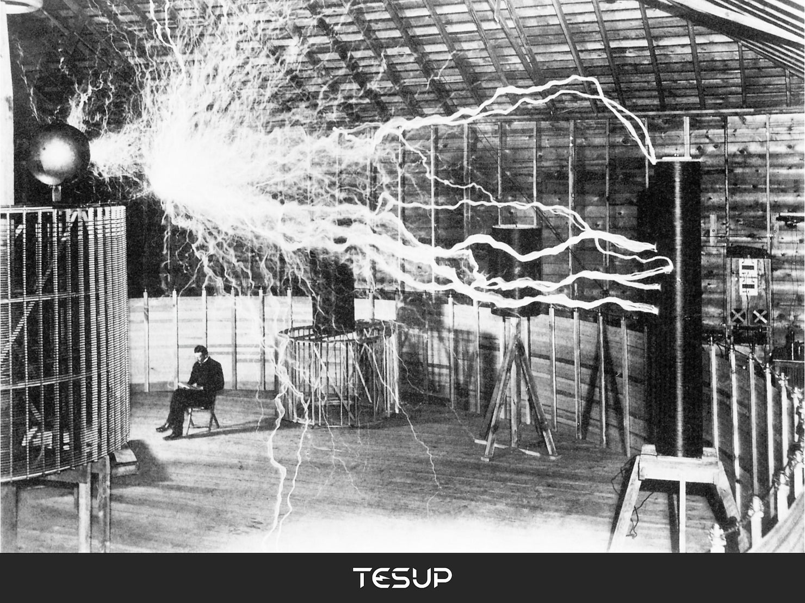
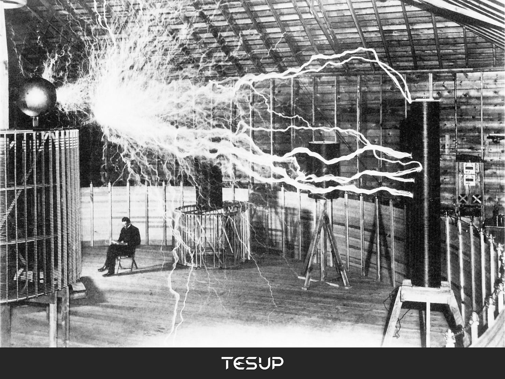
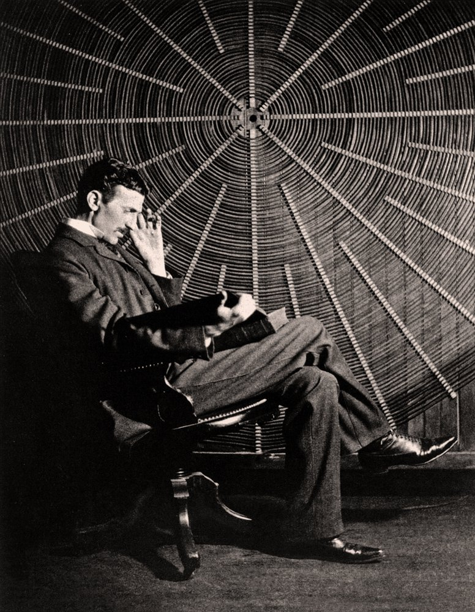
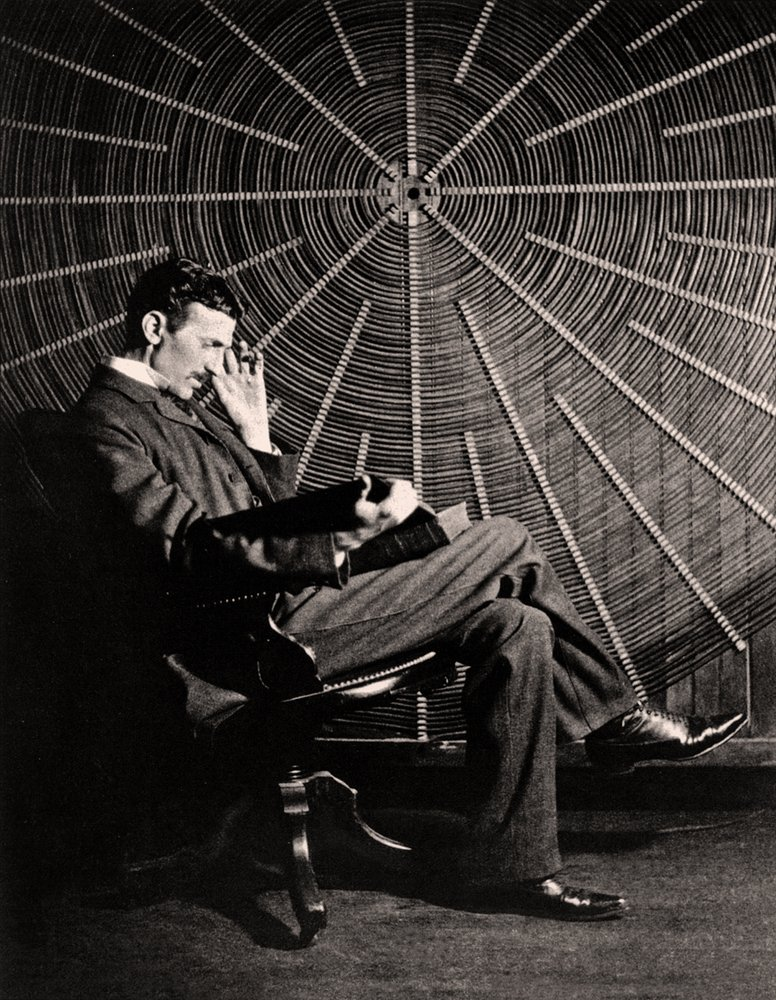
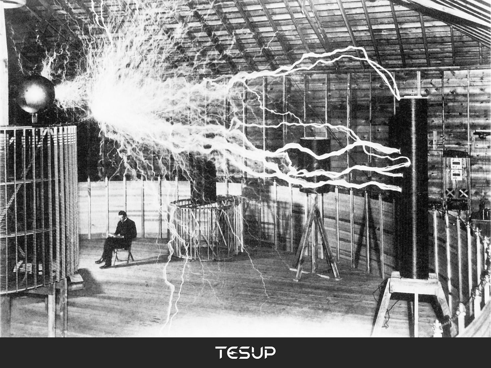
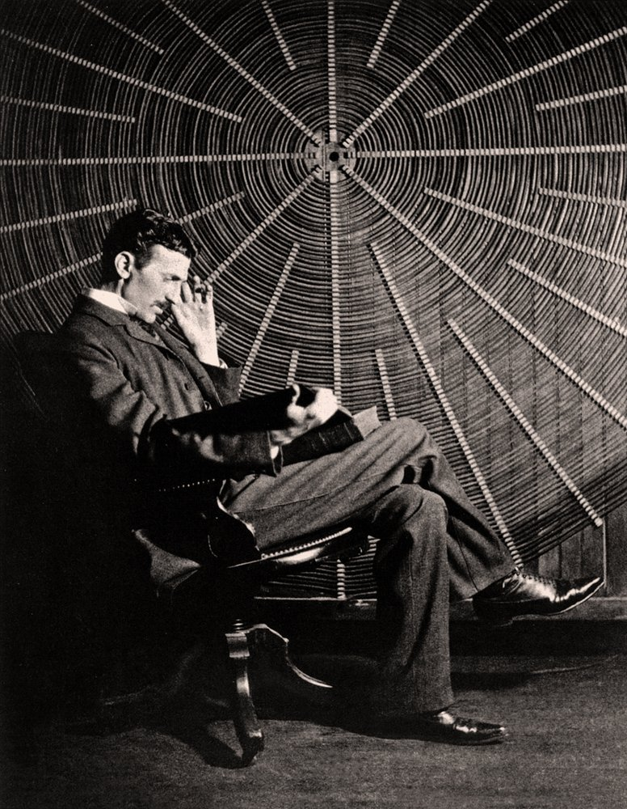

معرض الصور
 

 

ولد نيكولا تسلا في 10 يوليو 1856 في سميلجان، كرواتيا (الإمبراطورية النمساوية حينها). درس الهندسة الكهربائية وعمل في عدة شركات قبل أن ينتقل إلى الولايات المتحدة عام 1884 للعمل مع توماس إديسون.
في عام 1887، أسس تسلا شركته الخاصة وبدأ تطوير التيار المتردد، والذي أصبح الأساس لشبكات الكهرباء الحديثة. اخترع العديد من الأجهزة مثل الملف اللولبي (ملف تسلا) وأسهم في تطوير الاتصالات اللاسلكية.
توفي نيكولا تسلا في 7 يناير 1943 في نيويورك، لكنه بقي رمزًا للإبداع والابتكار في عالم الكهرباء والتكنولوجيا.
نيكولا تسلا (1856-1943) كان مهندسًا كهربائيًا ومخترعًا مشهورًا، عُرف بمساهماته في التيار المتردد والاتصالات اللاسلكية.


يمكنك مراسلتنا عبر البريد الإلكتروني: info@tesla.com